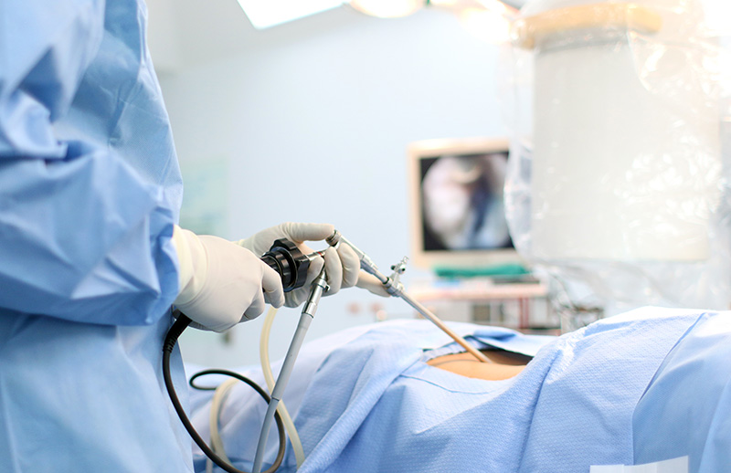
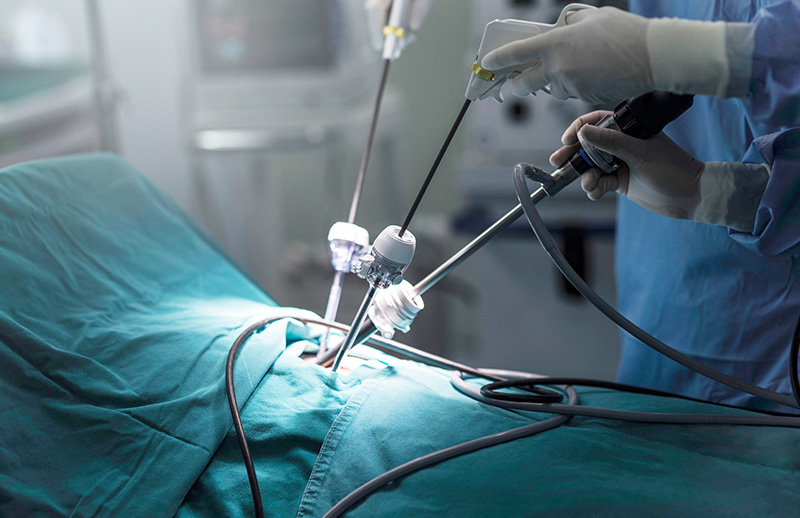

Kanser cerrahisi tedavide nasıl kullanılır?
Kanser cerrahisinin ilk amacı kanseri vücudunuzdan tamamen alarak tedavisini sağlamaktır. Cerrah bunu genellikle tüm kanserin çıkarıldığından emin olmak amacıyla kanserli doku ile birlikte onu çevreleyen bir miktar sağlıklı dokuyu kesip çıkararak yapar.
Cerrah aynı zamanda kanserin yayılıp yayılmadığına karar vermek amacıyla birkaç lenf düğümü de çıkarabilir. Böylece doktorunuz tedavi şansınızı ve daha fazla tedaviye ihtiyaç duyma durumunuzu değerlendirebilir.
Meme kanseri vakalarında, doktorunuz tüm meme dokusunu çıkarabilir (mastektomi) veya yalnız kanserli doku ve onu çevreleyen dokuyu içeren kısmı çıkararak (lumpektomi) kanseri ortadan kaldırabilir.
Akciğer kanseri vakalarında, doktorunuz girişim esnasında kanserin tamamen ortadan kaldırıldığından emin olmak adına akciğerin bir kısmını (lobektomi) veya tüm bir akciğeri (pnömonektomi) çıkarabilir.
Bu örneklerin her ikisinde de cerrah, kanser sıçradıysa görebilmek üzere ameliyat alanındaki birkaç lenf düğümünü de operasyon esnasında çıkarabilir.
 Kanser cerrahisinde kullanılan diğer teknikler nelerdir?
- Lazer cerrahisi
- Mohs cerrahisi
- Laparoskopik cerrahi
- Robotik cerrahi
- Doğal Orifis (Açıklık) Cerrahisi